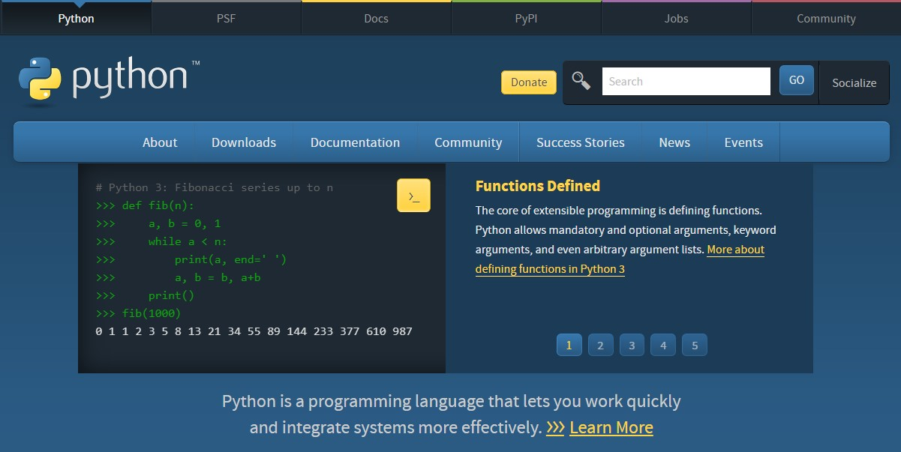
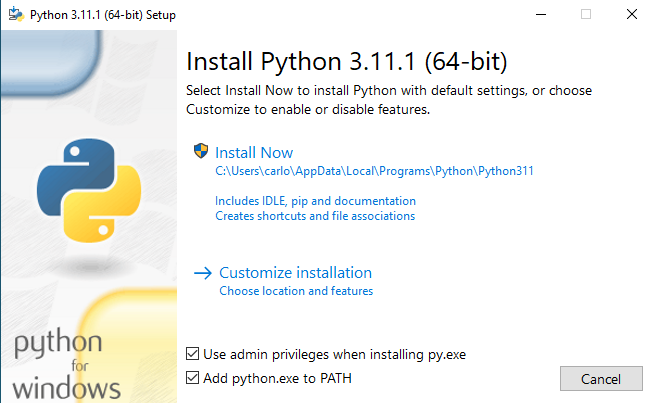
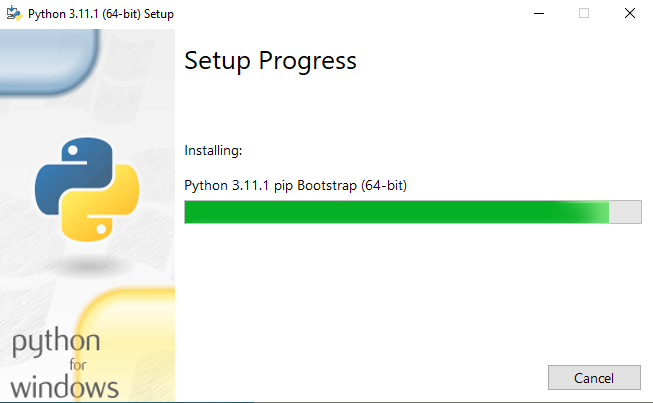
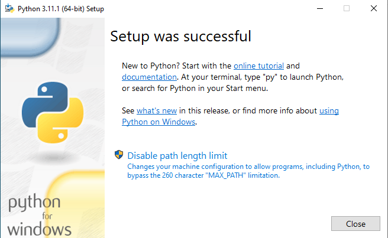
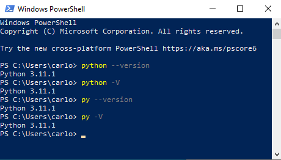

Chapter 1: Installation & Setup#
The first step to start programming using Python is to make an installation in your computer. There are websites that offer different ways to work with Python without the need of having anything installed, but in this article you are going to make Python available in your personal computer.
Installing Python is very straightforward, and it takes just a couple of minutes in most cases. Once you have Python installed in your machine, you can start using the most basic but powerful features of this great programming language.
In this article I’m going through one of the various methods available to install Python: downloading the executable installer from the official website. Let’s get started.
Step 1: Download the Python installer#
The first step is to find the official Python website and look for the installer.
Go to the Python official website: https://www.python.org/. The Python website looks like the following image.

Fig. 1 The Python official website#
Within this main website, find the Downloads section and click on it. If you are on Windows, the website will show the download version for that operating system. Each operating system has a different download source. You should find the one for your current operating system (Windows, Linux, macOS, etc).
If you are a sufficient curious person, you may have already scrolled down the page and noticed that there are different Python versions you can download and install. You can install any Python version you want, and in fact you can have more than one Python version installed in your computer. This is outside the scope of this tutorial. Instead, we will focus on working with the latest stable Python release.
Go ahead and download the latest release for your operating system. For my case and for the time of writing this article, I have to download the Python 3.11.1 version for Windows. When you click on the link, it will download an exe file with a size of about 27 Mb.
Step 2: Run the exe file#
Open the exe file. There is a chance that a pop up window will show up asking for permissions. You will see a window like the following (the version of the installable will be different than the one in the image):

Fig. 2 The first Python installation screen#
The Customize installation section gives a set of options to choose, like including pip in the installation (this is included by default).
I recommend you mark the option that says Add Python to PATH. I’m not going to discuss the implications of doing this or not, but I encourage you to investigate on this to know at least what that is. For more information about PATH, you can read the discussion on this link.
Click install now. Wait for the files to finish installing.

Fig. 3 Python installation in progress#
Once the installation finishes, this window will show. As you can see there are a couple of useful links like official tutorials and documentation.

Fig. 4 Python installation finishing#
Step 3: Check the Python installation#
Python is now installed on your computer, but you may want to make sure that everything went fine with the process. You can check your Python installation by running a first Python command on the terminal.
If you are on Windows, open Windows PowerShell (you may have to install this depending on your system).
Write
python --version(double hyphen) and hit Enter. Alternatively you can writepython -V(with a single hyphen). This command is equivalent. You can also writepy --versionorpy -V.
In any case, you should see the current Python version as the output:

Fig. 5 First Python code in Windows Powershell#
As you can see the terminal prints the current Python version installed on your machine. This means everything went good and you are ready to use Python to write your programs.
Conclusion#
In this article you learned how to install Python on your computer. Although I assume you are using Windows, you can also install Python on your preferred operating system.
You can find much more information in this link. This is the official Python documentation on how to use Python on Windows. If you are on a mac, you can follow this link instead.
In the next article you are going to learn how to work with Python and write your first programs. See you next time!